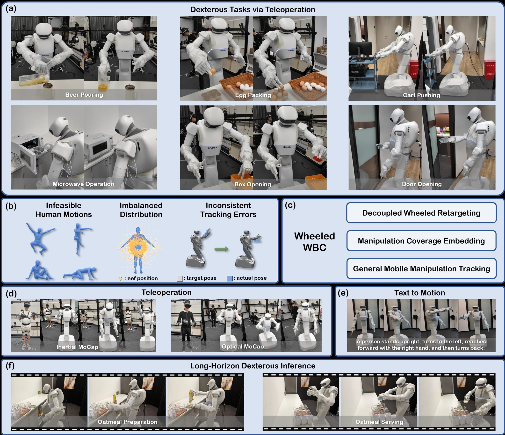
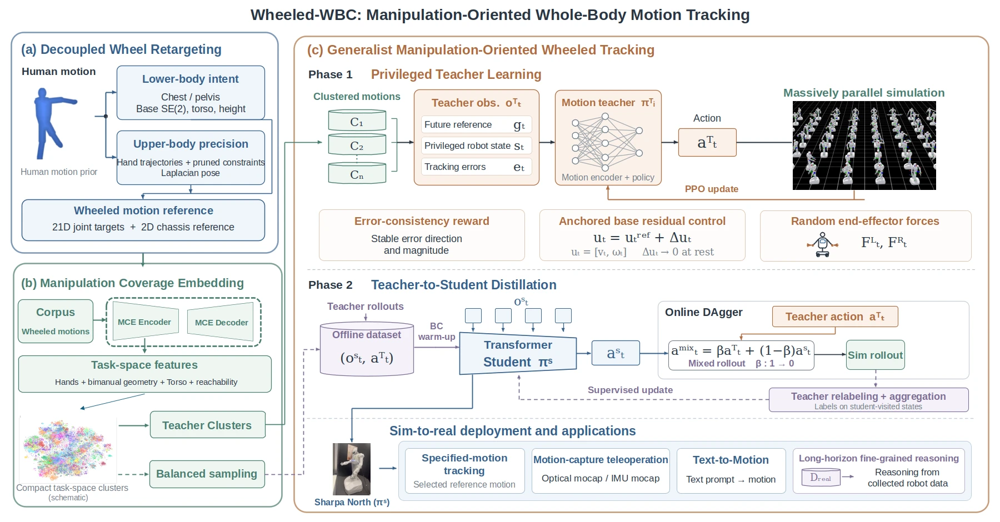
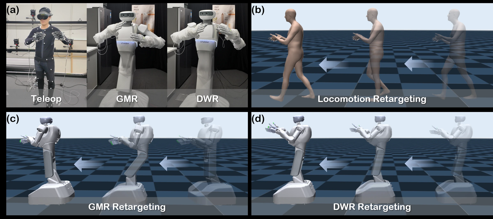
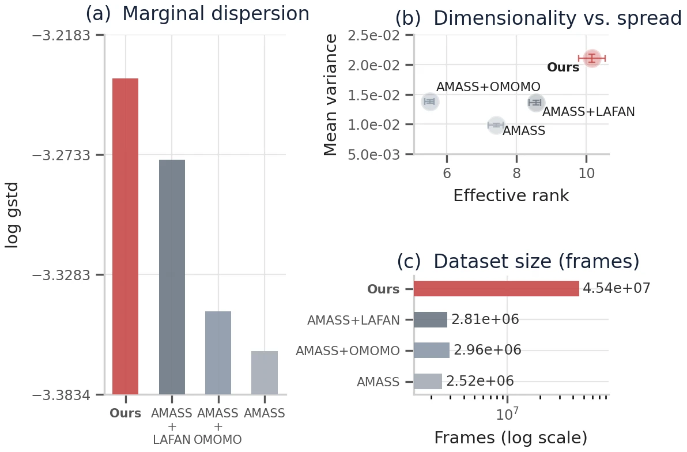
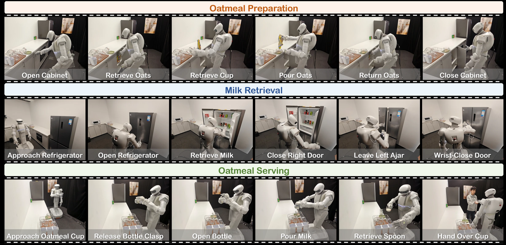

{kind=link}
Bridge the embodiment gap
Decoupled Wheeled Retargeting preserves upper-body configurations while mapping human locomotion intent to the mobile base and lower body.
Retargeting in practiceWhole-body control · Mobile manipulation
Manipulation-Oriented Whole-Body Control
for Wheeled Humanoid Robots
From human motion to dextrous mobile manipulation.
One controller for coordinated hands, body, and base.

Cross-embodiment evaluation; each method uses its own robot and retargeting pipeline.
01 / Overview
Wheeled humanoid robots bring efficient mobility and human-like upper-body dexterity to manipulation. Turning human motion into precise robot behavior requires addressing embodiment gaps, uneven manipulation coverage, and tracking stability.
Wheeled-WBC learns a unified controller from approximately 210 hours of human motion. It combines decoupled retargeting, task-space data organization, and manipulation-oriented tracking, then distills specialist teachers into a Transformer policy.
On Sharpa North, the framework supports zero-shot tracking of unseen motion-capture and text-generated references, teleoperation across sensing devices, and demonstration collection for long-horizon vision-language-action policies.
02 / Method
Retarget the motion. Organize the data. Learn stable tracking.

Decoupled Wheeled Retargeting preserves upper-body configurations while mapping human locomotion intent to the mobile base and lower body.
Retargeting in practiceManipulation Coverage Embedding represents task-space motion to guide teacher specialization and balanced sampling during student distillation.
Explore data coverageGeneral Mobile Manipulation Tracking combines base residual regularization and temporal error consistency, with progressive teacher-to-student control transfer.
See tracking resultsPreserving motion intent
DWR separates upper-body retargeting from lower-body motion generation, preserving hand relationships while reducing compensatory movement.
Comparison with GMR on Sharpa North, using locomotion and teleoperation references.

03 / Evaluation
Selected cross-embodiment results on unseen RoMo test motions.
| Method | Success ↑% | Wrist position ↓cm | Base ADE ↓m | Base heading ↓degrees |
|---|---|---|---|---|
| GMT | 35.03 | 71.06 | 0.64 | 23.39 |
| SONIC v1.1 | 54.46 | 33.83 | 0.31 | 3.99 |
| Humanoid-GPT | 52.55 | 37.12 | 0.34 | 5.08 |
| Wheeled-WBC Ours | 92.36 | 16.11 | 0.02 | 1.93 |
Baselines use Unitree G1 with GMR; Wheeled-WBC uses Sharpa North with DWR. These measurements compare the complete systems. ADE: average displacement error.

A broader motion vocabulary
MotionMillion, RoMo, BONES-SEED, and in-house optical motion capture contribute a diverse set of references. MCE organizes these motions for teacher learning and balanced distillation.
The embedding statistics characterize the resulting distribution’s breadth and structural diversity.
04 / On the robot
One control framework across sensing devices, motion sources, and downstream policies.
Inertial and optical motion capture drive coordinated whole-body manipulation.
Demonstration video forthcomingGenerated human motions become executable references through DWR.
Demonstration video forthcomingCollected demonstrations support a VLA policy across sequential kitchen tasks.
Demonstration video forthcoming
05 / Resources
Paper, code, and citation details will be added here when released.
Release links forthcoming.
The finalized author list and BibTeX entry will appear with the paper.
{kind=link}
{kind=link}